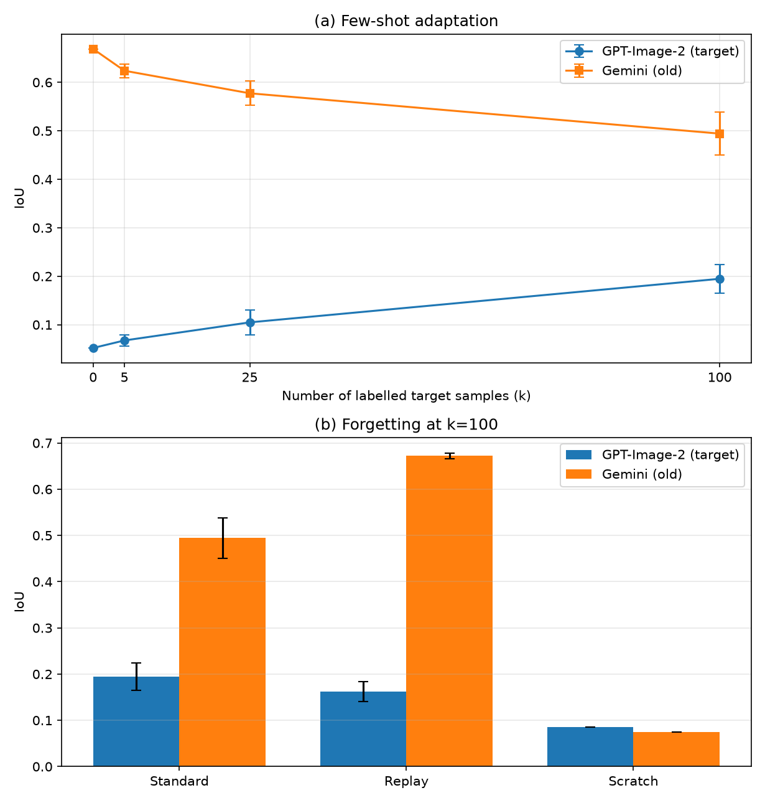
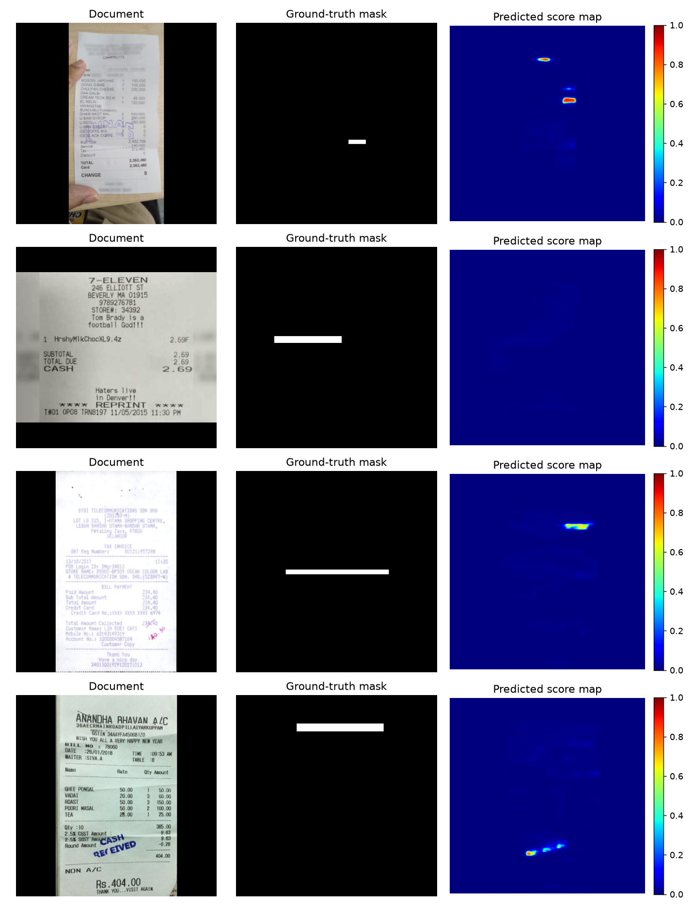
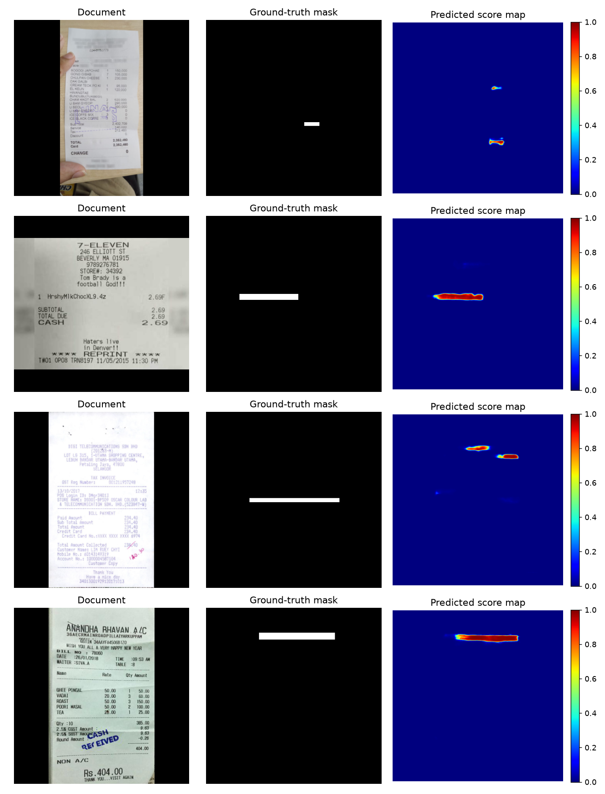
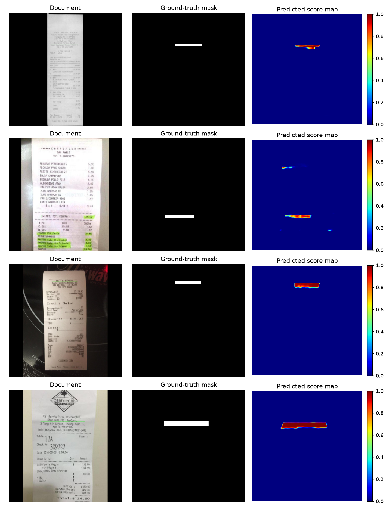
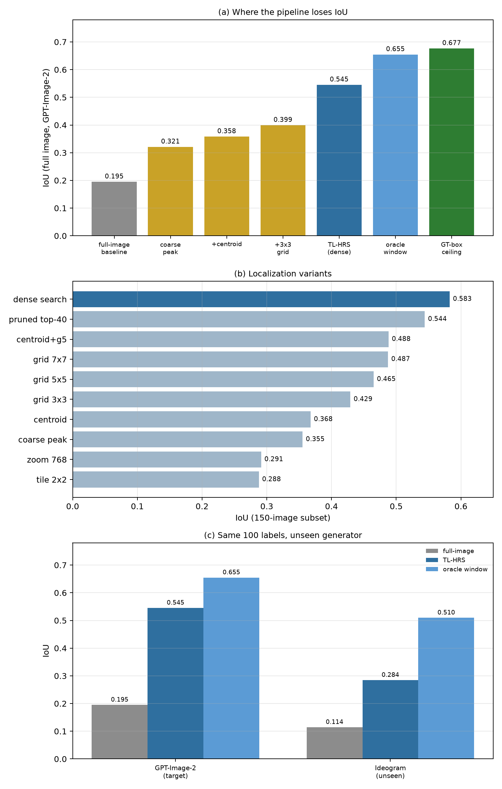

Authors:
Generative image editing has made it possible to alter a single numeric field in a financial document in under a second, and detectors trained on traditional (e.g., Photoshop-based) forgeries are largely blind to such edits. Even a detector trained on one generative inpainter collapses when the underlying generator changes — a generator shift. In realistic banking deployments, collecting many labelled forgeries for every new generator is infeasible. We study label-efficient adaptation of an AI-forged document detector under generator shift, and we ask whether a small number of labelled target-generator samples is sufficient to recover localization performance without catastrophically forgetting previously seen generators. Using the AIForge-Doc benchmark (Gemini, Ideogram, GPT-Image-2), we show that: (i) a detector trained on Gemini collapses on unseen generators (IoU 0.052 on GPT-Image-2); (ii) few-shot fine-tuning recovers localization monotonically, reaching IoU 0.195 ± 0.037 with only 100 labelled target samples (≈3.7× over zero-shot); (iii) training from scratch with the same 100 labels is substantially worse (IoU 0.085), showing that base-generator pretraining matters; and (iv) rehearsal of 100 old-generator samples restores in-domain performance to 0.672 ± 0.006 (near the 0.669 zero-shot level) at a modest target-generator cost (IoU 0.162). We further report a set of negative results: temperature scaling, global and per-image threshold calibration, sample-selection strategies, encoder freezing, frequency channels, and generic anomaly detection do not provide consistent gains. Our analysis indicates that the bottleneck is localization precision, not decision-threshold calibration. Finally, we show that adapting a native-resolution patch segmenter with the same 100 labels raises the localization ceiling from 0.459 to 0.677 IoU, but that the coarse peak used to position it is the real bottleneck: it misses the field centre by 152 px (median), so the crop covers only 53% of the tampered pixels. Replacing the single peak with a dense high-resolution search over 384 px windows and selecting by patch confidence reaches 0.545 ± 0.012 IoU on the full unseen generator (2.8× the full-image baseline, 82% of the adapted ceiling), and 0.284 IoU on a completely unseen generator (Ideogram) versus 0.114 for the full-image detector. A localization study shows that centroid, grid, zoom and tiling variants all underperform dense search, that the coarse map is too unreliable to prune it, and that the residual gap is a selection-confidence problem under generator shift (oracle-window IoU is 0.653). We release code, splits, and all results for reproducibility.
Digital document fraud is increasing rapidly. Recent generative inpainting APIs can replace a number or a date in a photographed receipt while preserving font, colour, and texture, leaving no obvious compression or copy-move traces. Detectors designed for traditional document tampering therefore degrade substantially on such forgeries.
A second, less discussed problem is generator shift. A detector trained on forgeries produced by one inpainting model learns generator-specific artefacts rather than a generator-agnostic notion of tampering. When a new generator appears, the detector collapses. In a bank, this is operationally critical: the institution cannot wait to collect thousands of labelled forgeries for every new tool.
We therefore study a practical question:
Given a detector trained on an old generator, how many labelled samples from a new generator are needed to recover localization, and how can we adapt without forgetting the old generator?
We use the AIForge-Doc benchmark, which provides AI-inpainted financial and form documents with pixel-precise masks for three generator families: Gemini 2.5 Flash Image, Ideogram v2 Edit, and GPT-Image-2. We adopt a leave-one-generator-out protocol and evaluate both localization (IoU/F1/Dice) and detection-oriented metrics (image AUC/AP, Recall@1%FPR).
Contributions. 1. A controlled study of label-efficient adaptation for AI-forged document detection under generator shift. 2. A few-shot adaptation curve (k = 0, 5, 25, 100; 3 seeds) showing monotonic recovery (IoU 0.052 → 0.195 ± 0.037). 3. A rehearsal strategy that restores old-generator performance to near zero-shot level (Gemini IoU 0.672 ± 0.006) while retaining most of the adaptation gain. 4. An honest set of negative results: calibration, adaptive thresholding, sample selection, encoder freezing, frequency channels, and generic anomaly detection do not provide consistent gains; we analyze why. 5. Qualitative evidence (score maps) showing that adaptation sharpens localization rather than merely shifting thresholds. 6. A text-localized high-resolution search (TL-HRS) method that adapts a patch segmenter with the same 100 target labels and searches the document densely at native resolution: the localization ceiling rises from 0.459 to 0.677, and the automatic pipeline reaches 0.545 ± 0.012 IoU on the full unseen generator (2.8× the full-image baseline, 82% of the ceiling), while a single coarse peak reaches only 0.321. 7. A localization study showing that the coarse stage, not segmentation, is the bottleneck (median peak error 152 px; crop coverage 53% vs. 98% at the true box), and that dense search beats centroid refinement, grids, zoom, tiling, coarse-guided pruning, OCR selection, multi-signal fusion and pixel gating; the remaining gap is uncalibrated selection confidence under generator shift.
AI-forged document detection. DocTamper introduced a large document-tampering benchmark and a document-specific detector based on frequency-domain losses. TruFor combines a transformer backbone with a noise fingerprint for general image forgery localization. AIForge-Doc and DOCFORGE-BENCH recently showed that these detectors degrade severely on diffusion-inpainted documents, and that the problem remains unsolved. Our work builds directly on AIForge-Doc and studies adaptation rather than zero-shot detection.
Few-shot and domain adaptation. Few-shot learning and unsupervised domain adaptation are mature fields. We do not propose a new adaptation algorithm; instead, we characterize how standard fine-tuning behaves in the specific regime of extreme label scarcity and generator shift, and identify which components (pretraining, rehearsal, calibration) actually matter.
Continual learning and rehearsal. Rehearsal (experience replay) is a classical remedy for catastrophic forgetting. We show that a small replay buffer of old-generator samples is sufficient to preserve in-domain performance while adapting to a new generator.
Calibration. Temperature scaling is a standard post-hoc calibration method. We find that although it changes confidence, it does not change ranking and therefore does not improve IoU; global and per-image threshold calibration are generator-specific and do not transfer reliably.
We use AIForge-Doc (v1 and v2):
| Split | Forged | Authentic | Generators |
|---|---|---|---|
| v1 train | 3,249 | 3,249 | Gemini (2,912), Ideogram (337) |
| v1 test | 812 | 812 | Gemini (727), Ideogram (85) |
| v2 train | 2,453 | — | GPT-Image-2 |
| v2 test | 613 | — | GPT-Image-2 |
Documents are receipts and forms; forgeries replace a single numeric field. The median tampered area is ≈1% of the image. Masks are binary (0/255). We verified the integrity of all 18,315 files (0 corrupt) and visually confirmed mask alignment.
We define three settings:
Unless stated otherwise, the base detector is trained on Gemini (2,912 forged + 2,912 authentic).
We use a U-Net with a ResNet-18 encoder pretrained on ImageNet. The model outputs a single-channel logit map. It is trained on Gemini with:
[ \mathcal{L} = \mathrm{BCEWithLogits}(\hat{y}, y; w=20) + \mathcal{L}_{\mathrm{Dice}}, ]
where the positive weight compensates for the extreme pixel imbalance (≈1% tampered). Inputs are letterboxed to 384×384 to preserve document aspect ratio. Training uses AdamW (lr (10^{-4})) for 10 epochs.
Given (k) labelled samples from the target generator (plus (k) authentic samples), we fine-tune the base detector for 10 epochs with the same loss and optimizer. All models are evaluated on a disjoint target test split.
To mitigate forgetting, we add (r) samples from the old generator (Gemini) to the fine-tuning set. We compare random replay with two informed selectors: hard (highest per-sample BCE under the base model) and uncertainty (highest predictive entropy).
We study three calibration strategies: temperature scaling fitted on a held-out fraction of the labelled target samples; global threshold optimization; and per-image adaptive thresholding (keep the top-(p)% pixels). These are evaluated but, as shown in Section 6.5, do not provide consistent gains.
| Test set | IoU | F1 | Dice | Image AUC |
|---|---|---|---|---|
| Gemini (in-domain) | 0.669 | 0.802 | 0.719 | 0.946 |
| Ideogram (unseen) | 0.098 | 0.179 | 0.109 | 0.546 |
| GPT-Image-2 (unseen) | 0.052 | 0.099 | 0.104 | 0.520 |
A detector trained on Gemini achieves strong in-domain localization but collapses on unseen generators. Notably, on GPT-Image-2 the image-level AUC is near chance, yet the pixel AUC remains 0.899 (Section 6.5). In other words, the model still ranks tampered pixels above background, but its predicted mask is spatially imprecise.
| k | IoU | F1 | Dice | Pixel AUC | Gemini IoU (forgetting) |
|---|---|---|---|---|---|
| 0 | 0.052 | 0.099 | 0.104 | 0.899 | 0.669 |
| 5 | 0.068 ± 0.015 | — | — | 0.877 ± 0.020 | 0.624 ± 0.017 |
| 25 | 0.105 ± 0.031 | — | — | 0.830 ± 0.023 | 0.577 ± 0.031 |
| 100 | 0.195 ± 0.037 | 0.292 | 0.202 | 0.907 ± 0.031 | 0.494 ± 0.054 |
Adaptation improves localization monotonically, reaching a 3.7× IoU gain with only 100 labelled target samples. The cost is forgetting: in-domain Gemini drops from 0.669 to 0.494. Figure 1(a) visualizes the curve; Figure 1(b) compares standard fine-tuning, rehearsal, and training from scratch at k=100.
Figure 1. (a) Few-shot adaptation curve: IoU on the unseen GPT-Image-2 generator and on the old Gemini generator as a function of the number of labelled target samples (mean ± std over seeds). (b) Forgetting at k=100: standard fine-tuning vs. rehearsal vs. training from scratch.

| Setting (k=100) | GPT IoU | GPT F1 | Pixel AUC | Gemini IoU |
|---|---|---|---|---|
| Fine-tune from Gemini base | 0.1597 | 0.2754 | 0.8536 | 0.5522 |
| Train from scratch | 0.0850 | 0.1567 | 0.6977 | 0.0750 |
Fine-tuning is ≈1.9× better than training from scratch on the target generator, and preserves old-generator knowledge far better. Label-efficient adaptation therefore benefits from base-generator pretraining.
| Method (k=100) | GPT IoU | Gemini IoU | Ideogram IoU |
|---|---|---|---|
| Standard fine-tune (3 seeds) | 0.195 ± 0.030 | 0.494 ± 0.044 | 0.096 ± 0.014 |
| Replay 100 (4 seeds) | 0.162 ± 0.021 | 0.672 ± 0.006 | 0.108 ± 0.015 |
Replay restores Gemini to 0.672 ± 0.006, essentially the zero-shot level (0.669), at a modest target-generator cost (0.195 → 0.162). This is the central practical finding: a small rehearsal buffer is sufficient to prevent catastrophic forgetting under generator shift.
Random replay performed best among the selectors; hard and uncertainty-based replay did not improve retention at the same budget.
| Strategy | Target (GPT) IoU | Old (Gemini) IoU | Conclusion |
|---|---|---|---|
| Global threshold tuning | 0.160 → 0.194 (one model) | — | modest, generator-specific |
| Temperature scaling | unchanged | unchanged | changes confidence, not ranking |
| Per-image adaptive threshold | 0.158 → 0.141 (p1%) | 0.555 → 0.365 | worse than fixed 0.5 |
| Sample selection (k=50) | random 0.157 vs k-center 0.134 vs uncertainty 0.126 | — | random is a strong baseline |
| Freeze encoder | 0.113 | 0.087 | fails |
| Augmentation (JPEG/blur/noise) | 0.052 → 0.054 | 0.669 → 0.589 | marginal, harms in-domain |
| Multi-generator training | P2 GPT 0.058; P3 Ideogram 0.121 | — | marginal |
| Frequency channels (FR-Net) | 0.061 | 0.561 | marginal, harms in-domain |
| PatchCore (ResNet-18 / DINOv2) | ≈0.05 (image AUC ≈0.5) | — | fails |
Key observation. Pixel AUC is consistently high (0.83–0.91) even when IoU is low, and neither temperature scaling nor per-image adaptive thresholding improves IoU. The bottleneck is therefore spatial localization precision, not decision-threshold calibration. This also explains why calibration tuned on the target generator can hurt the old generator: it is generator-specific.
Figure 2 shows score maps for the same forged GPT-Image-2 documents under three settings. Zero-shot predictions (Fig. 2a) are diffuse, often off-target, and sometimes nearly blank. After adaptation (Fig. 2b), score maps concentrate on the edited field. In-domain maps (Fig. 2c) are sharp and closely match the ground truth. The qualitative evolution mirrors the quantitative gains.
Figure 2. Predicted score maps for the same GPT-Image-2 forged documents. (a) Zero-shot detector: diffuse and often off-target. (b) After few-shot adaptation (k=100): concentrated on the edited field. (c) In-domain Gemini: sharp and closely matching the ground truth.



We break down per-image IoU by document source and by tampered-area bucket on GPT-Image-2 and on in-domain Gemini.
| Source | Standard (GPT) | Replay (GPT) | In-domain (Gemini) |
|---|---|---|---|
| CORD (price fields) | 0.251 | 0.195 | 0.489 |
| WildReceipt | 0.151 | 0.092 | 0.568 |
| SROIE | 0.107 | 0.059 | 0.575 |
| XFUND (multilingual forms) | 0.013 | 0.010 | 0.372 |
| Tampered area | Standard (GPT) | In-domain (Gemini) |
|---|---|---|
| <0.5% | 0.170 | 0.413 |
| 0.5–1% | 0.131 | 0.572 |
| 1–2% | 0.160 | 0.619 |
| >2% | 0.189 | 0.577 |
Two findings stand out. First, cross-generator localization is strongly source-dependent: CORD price fields are the easiest, whereas XFUND multilingual forms are almost entirely missed. Second, in-domain performance improves with tampered-area size, but under generator shift the area effect is weak and non-monotonic. This indicates that the failure is not merely due to tiny regions; document type, language, and layout are major factors. Replay slightly reduces target performance across all sources, consistent with the trade-off reported in Section 6.4.
The full-image detector predicts at a letterboxed 384px resolution, which blurs the edited field (median tampered width ≈148px in the original document). A native-resolution patch segmenter can sharpen the mask inside a 384px crop, but it still needs a crop position.
Few-shot patch adaptation. The patch segmenter is first trained on Gemini crops around ground-truth fields. Used zero-shot on GPT-Image-2 it reaches only 0.459 IoU even with the oracle box. We therefore fine-tune it with the same 100 target labels used by the full-image baseline: 100 GPT crops around ground-truth fields, 100 non-overlapping same-line negatives, 100 authentic crops, plus 100 Gemini replay crops to limit forgetting. No new labels are used. The boxes used to sample crops are derived from the training masks by connected components, so they cost no additional annotation.
Diagnosis: the coarse stage, not the segmenter, is the bottleneck. The natural way to position the crop is the argmax of the full-image heatmap. It fails: measured against the centre of the ground-truth field on 100 test images, the median peak error is 152 px (0.4 crop widths; 45% of peaks are farther than 192 px), and the 384px crop centred at the peak contains only 53% of the tampered pixels, versus 98% when centred at the true box. With the same adapted segmenter this turns a 0.65 IoU (oracle box) into 0.33 IoU. Re-running the coarse model on a zoomed 768px window, on 2×2 tiles, or on a coarse-probability centroid does not help (0.29, 0.29 and 0.37): the model is only reliable at the scale it was trained on.
Dense high-resolution search. We therefore drop the coarse peak and run the adapted patch segmenter as a dense detector: a 384px window slides over the document with stride 96 (≈197 windows per forged test image), and each window yields a probability map and a confidence score. The score is the mean of the top 1% of its pixels, a robust proxy for "this window contains a sharp, high-confidence mask". The window with the highest score is the prediction; no OCR, selector, gating or multi-scale fusion is used. Local exhaustive search is affordable offline (≈20 s per document on one consumer GPU).
| Setup (GPT-Image-2, full forged test, 613 images) | IoU | Notes |
|---|---|---|
| Full-image few-shot, k=100 | 0.195 ± 0.037 | 3 seeds (0.158 / 0.231 / 0.195) |
| Patch, zero-shot (GT box) | 0.459 | Gemini-only patch |
| Patch, adapted (GT box) | 0.677 ± 0.009 | same 100 labels; 3 seeds |
| Coarse peak + adapted patch | 0.321 | median peak error 152 px |
| + centroid re-centring | 0.358 | truncation biases the centroid |
| + 3×3 local grid around the peak | 0.400 | helps, but the peak is too far |
| TL-HRS, dense search (stride 96) | 0.545 ± 0.012 | 3 seeds (0.555 / 0.549 / 0.532) |
| — oracle window (upper bound of search) | 0.653 | selection loses 0.11 |
| Ideogram (unseen generator), TL-HRS | 0.284 | oracle window 0.510 |
| Ideogram, full-image detector | 0.114 | same split (422 forged) |
Figure 3. (a) Stage-wise IoU on the full forged test: the adapted patch alone (coarse peak) recovers little, while dense search recovers most of the oracle-window and GT-box ceilings. (b) Localization variants on a 150-image subset: exhaustive dense search dominates centroid refinement, grids, zoom, tiling and coarse-guided pruning. (c) The same 100 labels on the target and on a completely unseen generator.

Figure 3 summarizes the stage-wise and cross-generator picture. Three findings follow. (1) Patch adaptation transfers, and the ceiling is real. With the oracle box, the same architecture moves from 0.459 (zero-shot) to 0.677 ± 0.009 when fine-tuned with the same 100 target labels; in-domain Gemini drops only from 0.557 to 0.532, a cost that replay mitigates. (2) The bottleneck is where to look, not what to predict. A single coarse peak recovers only 0.321, but dense search over the same segmenter reaches 0.545 — 2.8× the full-image baseline and 82% of the adapted ceiling. The gap between TL-HRS and its oracle window (0.653) is entirely due to ranking the right window first. (3) Intelligence in the search does not pay. Coarse-guided pruning is worse than exhaustive search (top-40 windows: 0.544; top-10: 0.474; top-5: 0.431), and the coarse map is therefore not a useful prior at this resolution. Zoom, tiling and coarse centroiding are all below the single-peak-plus-grid baseline, so the simple sliding window dominates.
6.8.1 Pre-adaptation selector study (negative results). Before adapting the patch segmenter we tried to close the gap by improving selection with the zero-shot patch. On the full forged test, a ResNet-18 field classifier reaches 0.193, the coarse heatmap 0.157, and the native patch response 0.158; rank fusion of all three reaches 0.199 — none exceeds the 0.195 ± 0.037 baseline. On a 60-image subset (27 forged; it over-represents CORD and under-represents WildReceipt) we additionally tried centroid refinement, per-image MAD z-scores (monotonic, hence vacuous), line-merge, selector adaptation, and a trained DINOv2 field-vs-document-context selector (0.195); all failed. These results motivated the patch-adaptation route, and the dense search then subsumes selection: the adapted patch's own confidence, evaluated densely, is a stronger ranker than any of these learned selectors.
6.8.2 Label efficiency and generalization. Adapting the patch stage is cheap: with 25 target labels the GT-box ceiling is already 0.584 (86% of the 0.677 reached with 100), while the full-image baseline with 25 labels is 0.105. The same adapted segmenter, searched densely, transfers to Ideogram — a generator absent from both training and adaptation — at 0.284 IoU versus 0.114 for the full-image detector, with an oracle window of 0.510. The 0.284 → 0.510 gap shows that the detector finds the field under generator shift but its confidence is miscalibrated across generators, which is the clearest target for future work.
Why does adaptation help? Fine-tuning on a few target samples appears to sharpen the spatial response around the edited region, rather than merely shifting a global threshold. This is consistent with the high pixel AUC before adaptation and with the failure of threshold-calibration methods.
Why does forgetting happen? The base detector's features encode generator-specific artefacts. Fine-tuning on a new generator overwrites part of this encoding. Rehearsal of a small number of old samples anchors the old decision boundary and restores in-domain performance.
Why do calibration and selection fail? Calibration is generator-specific and does not change pixel ranking; sample selection does not address the underlying localization error. These negative results are useful: they rule out several intuitive but ineffective remedies. They also show that learned selectors trained on a handful of target images overfit the wrong cues; the adapted patch's own dense confidence is a better ranker.
Where is the ceiling, and what limits us? Adapting the patch segmenter with the same 100 target labels raises the oracle-box ceiling from 0.459 to 0.677, so segmentation is no longer the wall. The wall is where to look: the full-image peak is 152 px (median) from the field centre, and the crop it defines covers only half of the tampered pixels. Dense high-resolution search removes the dependence on that peak and reaches 0.545 ± 0.012 (82% of the ceiling). The remaining gap splits into two measured quantities: 0.545 → 0.653 is window ranking (oracle window), and 0.653 → 0.677 is the residual crop/segmentation limit. Under generator shift the ranking gap widens (0.284 observed vs. 0.510 oracle on Ideogram), which points to confidence calibration across generators rather than to a weaker detector.
A natural extension is federated adaptation: when one bank encounters a new generator and collects a small labelled set, it could share the model update (not raw customer data) with other institutions, allowing them to defend against the same threat without violating data-protection regulations. Combining few-shot adaptation with secure aggregation and differential privacy is an important direction.
Other directions include: (i) calibrating the patch confidence across generators to close the 0.284 → 0.510 ranking gap on unseen generators, and scoring windows jointly rather than independently; (ii) continual adaptation over a stream of generators; (iii) stronger domain-generalization objectives; (iv) broader benchmarks across document types and languages; and (v) calibrated uncertainty for human-in-the-loop review.
We studied label-efficient adaptation of AI-forged document detectors under generator shift. A detector trained on one generator collapses on unseen generators, but a small number of labelled target samples recovers localization substantially, and a small rehearsal buffer preserves old-generator performance with negligible forgetting. Our analysis shows that the remaining bottleneck is localization precision rather than threshold calibration, and that several intuitive remedies (calibration, adaptive thresholding, sample selection, encoder freezing) do not provide consistent gains. Adapting a native-resolution patch segmenter with the same 100 labels raises the localization ceiling from 0.459 to 0.677. The coarse peak used to position that segmenter is itself the wall — it misses the field centre by 152 px (median) and covers only 53% of the tampered pixels — and replacing it with dense high-resolution search yields 0.545 ± 0.012 IoU on the full unseen generator (2.8× the full-image baseline, 82% of the ceiling). The same pipeline reaches 0.284 IoU on a completely unseen generator (Ideogram) versus 0.114 for the full-image detector, with an oracle window of 0.510: the detector finds the field, but cross-generator confidence ranking remains the open problem. We hope these results provide a realistic foundation for deploying and adapting document-fraud detectors in banking workflows.